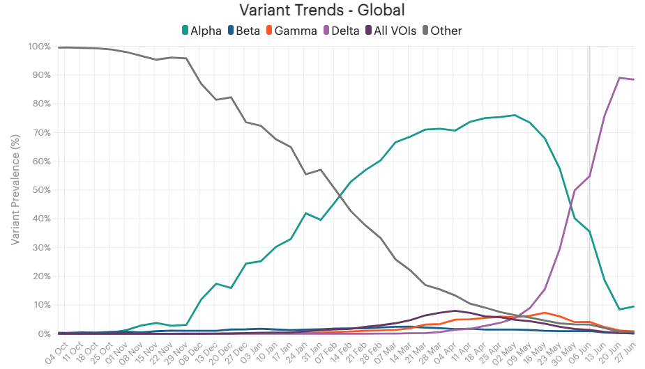
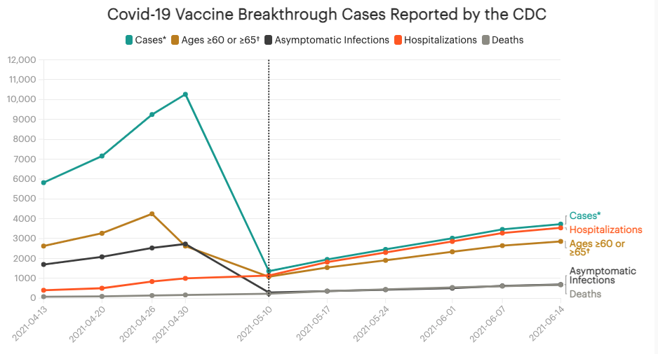

PTC
Categories
All
(11)
State Reporting
(1)
Vaccine Breakthrough
(3)
Vaccine Effectiveness
(2)
Vaccine Equity
(1)
Variants
(5)
Wastewater
(2)
The Anthology
Tackling the Complexities of Covid-19 Wastewater Surveillance
Monitoring SARS-CoV-2 in wastewater is more complicated than detecting it in a clinical sample, such as a nasal swab. This can introduce ambiguities in the data, which can be overcome by standardizing methodology.
Jul 6, 2022
Jacqueline Houtman, Lindsey Shultz, Rebecca Glassman, Jonathan Gilmour, Megan Diamond
13 min
The Challenge of Measuring Vaccine Effectiveness
Tightly controlled vaccine trials measure efficacy. In real life, vaccine effectiveness is more complicated. Here are some things to watch out for when interpreting vaccine effectiveness data.
Jun 8, 2022
Jacqueline Houtman, Dave Luo, Lindsey Shultz, Samuel Scarpino
9 min
A User’s Guide to US Vaccine Breakthrough Rates
We explain breakthrough rates, rate ratios, and vaccine effectiveness, describe the (sometimes problematic) ways jurisdictions report these numbers, and give advice on how to interpret them.
Apr 5, 2022
Kara Schechtman, Lindsey Shultz, Dave Luo, Jacqueline Houtman, Rebecca Glassman, Jonathan Gilmour, Leo Wolansky, Kaitlyn Johnson, Jessica Malaty Rivera
18 min
Variants, Sublineages, and Recombinants: The Constantly Changing Genome of SARS-CoV-2
The virus that causes Covid-19 continues to evolve, resulting in a vast array of different forms of the virus. Scientists work to make sense of the changes and track those that may pose a threat.
Mar 25, 2022
Jacqueline Houtman, Lindsey Shultz, Jessica Malaty Rivera, Jonathan Gilmour, Dave Luo, Samuel Scarpino, Rick Bright
12 min
Tracking SARS-CoV-2 and its Variants in Wastewater: An Old Technique is Yielding Powerful New Insights in the COVID-19 Pandemic
The CDC’s new data tracker has increased public interest in wastewater. Here is a deep dive into wastewater testing: its history, scientific basis, applications, and future.
Feb 16, 2022
Jacqueline Houtman, Lindsey Shultz, Jessica Malaty Rivera, Jonathan Gilmour, Dave Luo, Megan Diamond, Rick Bright
10 min
Vaccine Inequity Increases the Risk of New SARS-CoV-2 Variants Emerging
Robust genomic surveillance, along with transparency, communication, and global collaboration, is needed to detect and control emerging variants.
Dec 28, 2021
Jacqueline Houtman, Lindsey Shultz, Jessica Malaty Rivera, Emily Bass, Rick Bright, Dave Luo, Jonathan Gilmour
9 min
Tracking State Reporting of Covid-19 Vaccine Breakthrough Infections
Covid-19 vaccine breakthrough infection data provided by U.S. jurisdictions is incomplete and unstandardized. We are releasing a reporting scorecard evaluating state data with the goal of improving data transparency and interpretability.
Dec 22, 2021
Jennifer Clyde, Rebecca Glassman, Dave Luo, Jonathan Gilmour, Michal Mart, Jessica Malaty Rivera, Kara Schechtman, Lindsey Shultz, Leo Wolansky, Kaitlyn Johnson
6 min
Genomic Surveillance Is Essential To Track Covid-19 Variants in Both Unvaccinated and Vaccinated Populations
Technological advancements have made sequencing quicker and more affordable, but collaboration, outreach, and trust are needed to achieve representative samples from underserved populations.
Dec 1, 2021
Jacqueline Houtman, Rebecca Glassman, Lindsey Shultz, Jessica Malaty Rivera, Emily Bass, Rick Bright
8 min
The Critical Challenge of Tracking Breakthrough Infections, and Why We Still Need Better Data Standards
Despite ample vaccine supplies, outbreaks among unvaccinated populations in the US and the appearance of the Delta variant promote infection in fully vaccinated individuals. These breakthrough infections must be carefully tracked.
Nov 9, 2021
Jacqueline Houtman, Rebecca Glassman, Lindsey Shultz, Jessica Malaty Rivera, Emily Bass, Rick Bright
7 min

Making Sense of Variants: They All Deserve Attention. A Few Merit Concern.
Careful surveillance and study of SARS-CoV-2 variants will help determine the public health threats they pose and the mitigation efforts they require.
Jul 30, 2021
Jacqueline Houtman, Lindsey Shultz, Rebecca Glassman, Jessica Malaty Rivera, Rick Bright
20 min

The U.S. Can Lead the Way in Vaccine Breakthrough Reporting. Will It Squander This Opportunity
In May 2021, the US Centers for Disease Control and Prevention scaled back on the number of vaccine breakthrough cases it would study and report. More data, not less, is critical to understand the epidemiology of SARS-CoV-2 and to measure vaccine efficacy.
Jul 2, 2021
Jacqueline Houtman, Jessica Malaty Rivera, Rick Bright, Lindsey Shultz, Rebecca Glassman
9 min
No matching items